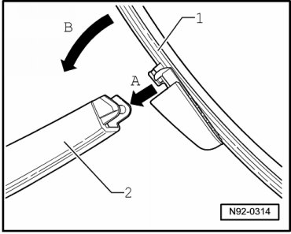

Rear Window Aero Wiper Blades
Rear Window Aero Wiper Blades
Removing
- Move the wiper into park position.
- Switch off ignition, switch off all electrical consumers and remove ignition key.
- Fold the wiper arm upward, holding the wiper blade where it is connected to the wiper arm.
Thereby, any unwanted bending of the wiper arm and blade is prevented.
- Release slider on wiper blade and fold up wiper blade until it reaches stop.
- Pull off the wiper blade.
Installing
- Slide wiper blade - 1 - on axis on wiper arm - arrow A -.

- Fold back wiper blade - arrow B -, lock slider on wiper blade and carefully fold wiper arm back on to rear window.